ALL VERSIONS¶
For each SDK release, do the following steps to update SDK version on existing projects
Attention
If you have an already activated device, you will need to perform “Factory Programming” with the toolbox provided in the sdk before being flashing via CCS.
Open CCS and verify that the latest versions of
SimpleLink Wifi Toolbox,SimpleLink Wi-Fi SDK, andSysConfigare detected as a productThis can be done by going to
File→Preferences→Code Composer Studio Settings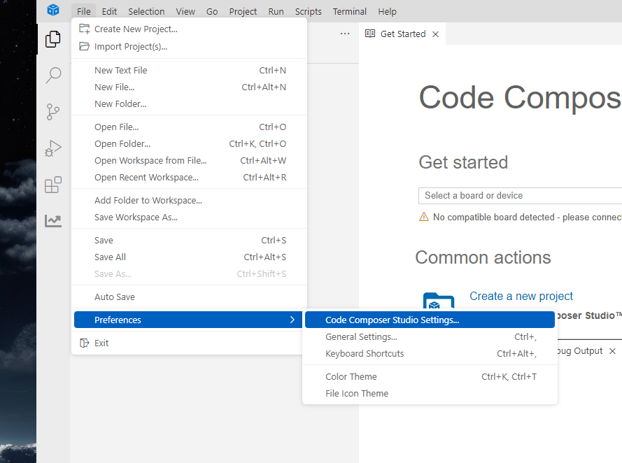
Fig. 32 Code Composer Settings
Next go into
General→Products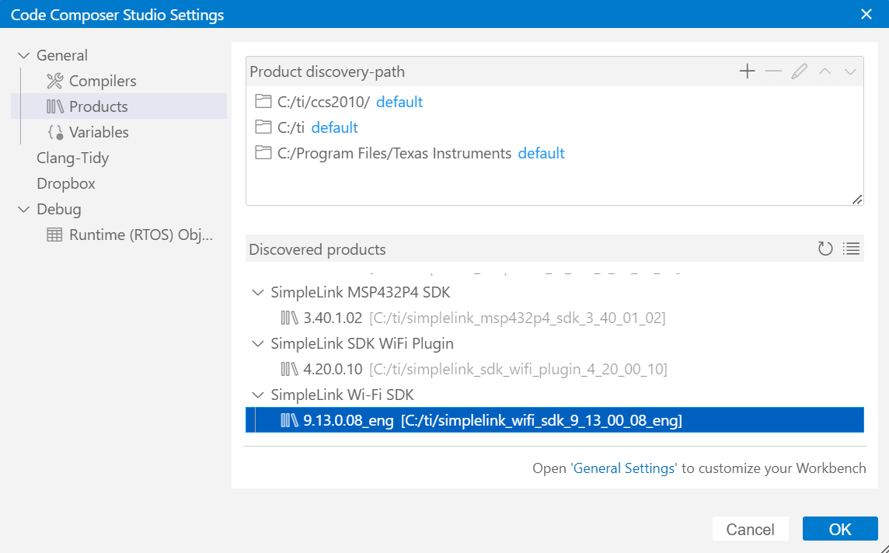
Fig. 33 Products
Import Project from the new SDK by going to
File→Import Projects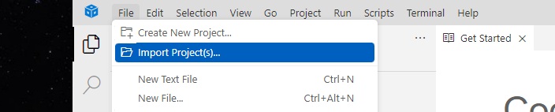
Fig. 34 Import Project
Browse for the example
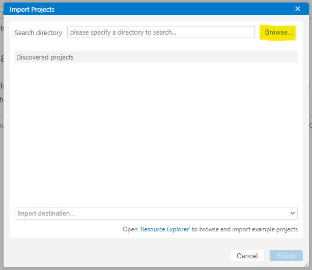
Fig. 35 Browse Examples
Verify
SimpleLink Wifi Toolbox,SimpleLink Wi-Fi SDK, andSysConfigis in the product dependencies. Right click on the Project and navigate toProperties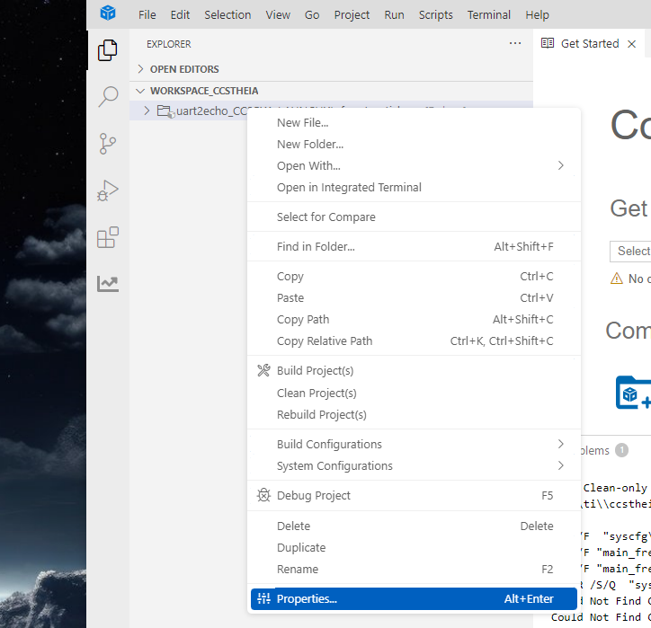
Fig. 36 Project Properties
In the Project Properties go to
General→Dependencies→Product Dependencies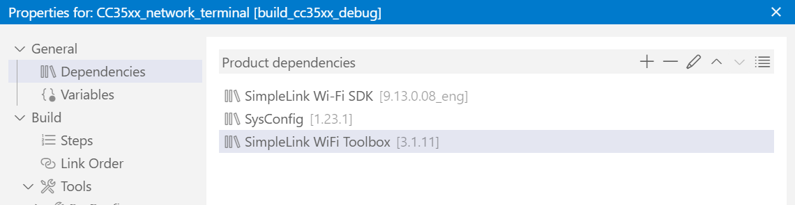
Fig. 37 Product Dependencies
If the
SimpleLink Wifi Toolboxis not in the list. Click on the Plus icon and select theSimpleLink Wifi Toolboxand latest version.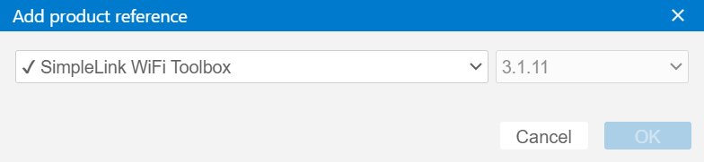
Fig. 38 Add Product Reference
{kind=link}
{kind=link}
{kind=link}
{kind=link}
{kind=link}
{kind=link}
{kind=link}
Open CCS and verify that the latest versions of
SimpleLink Wifi Toolbox,SimpleLink Wi-Fi SDK, andSysConfigare detected as a productThis can be done by going to
File→Preferences→Code Composer Studio Settings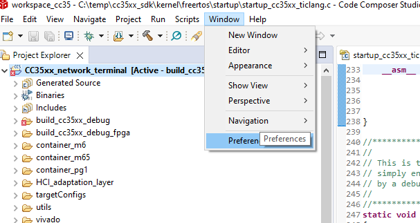
Fig. 39 Click on Preferences
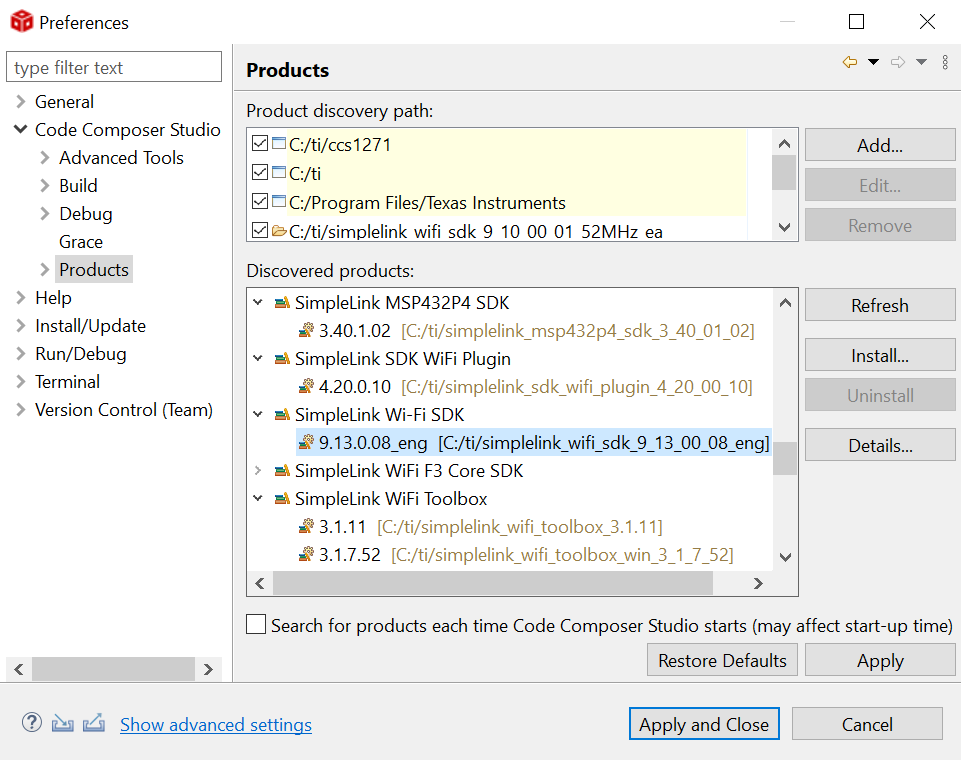
Fig. 40 Refresh Products
Import Project from the new SDK by going to
File→Import Projects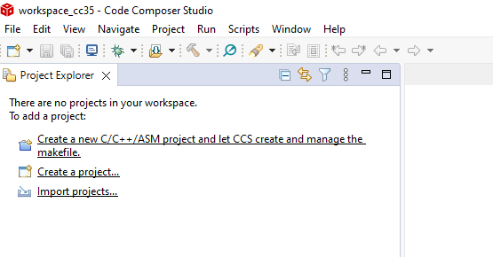
Fig. 41 Import projects
- On pop up dialog select “Code Composer Studio” and then “CCS Project” and “Next”.
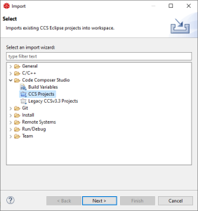
Fig. 42 CCS Project
- Click on “Browse …” and navigate into examples.
SDK_INSTALL_DIR/examples/rtos/CC35X1_LAUNCHXLfor driver examples/CC35xx_network_terminalfor the WiFi network terminal example
- Click “Select Folder” and selected projects should appear in “Discovered projects”. Make sure “Copy projects into workspace” is checked before clicking “Finish”.
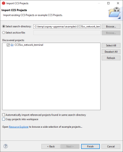
Fig. 43 Select Project
Verify
SimpleLink Wifi Toolbox,SimpleLink Wi-Fi SDK, andSysConfigis in the product dependencies.
{kind=link}
{kind=link}
{kind=link}
{kind=link}
{kind=link}
Right click on the Project and navigate to Properties
If the SimpleLink Wifi Toolbox is not in the list. Click on the Plus icon and select the
SimpleLink Wifi Toolbox and latest version.